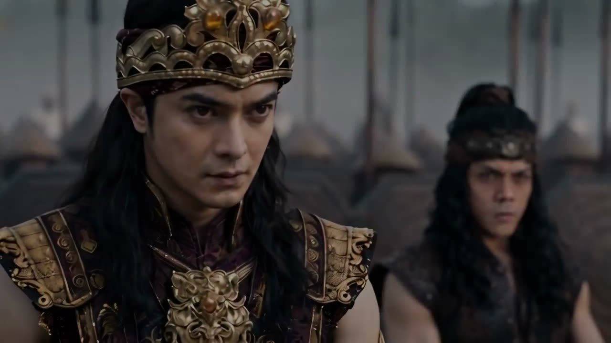
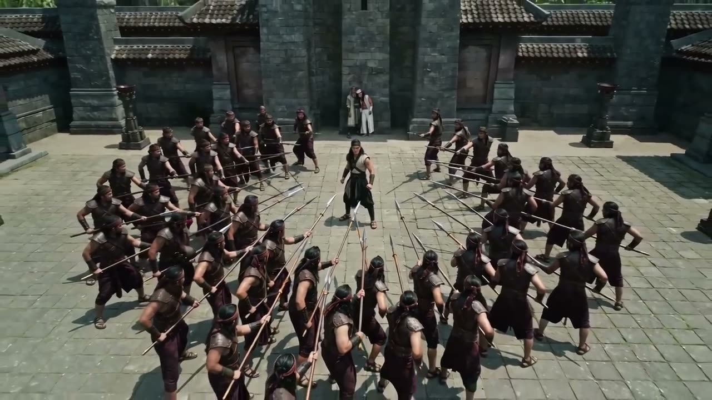
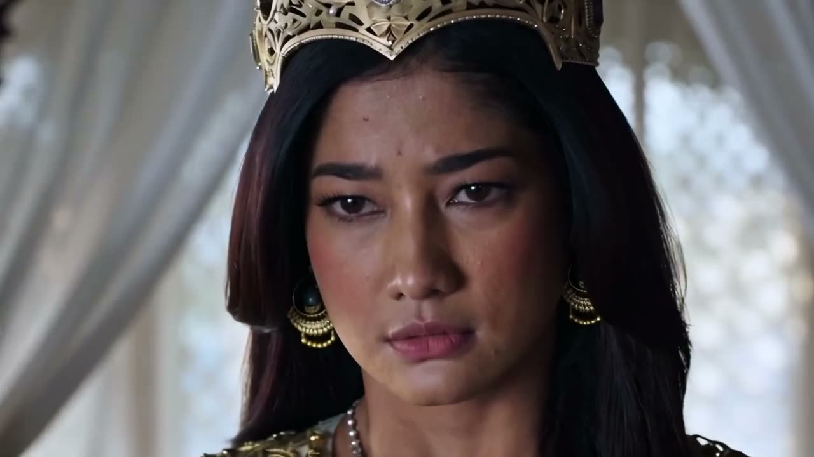
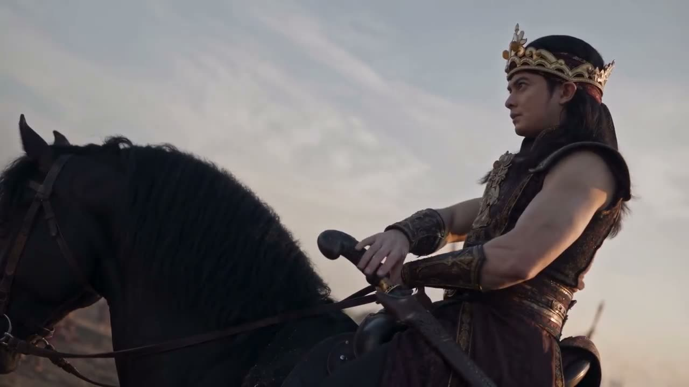
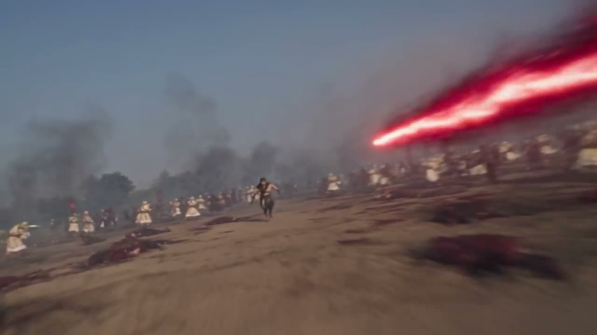
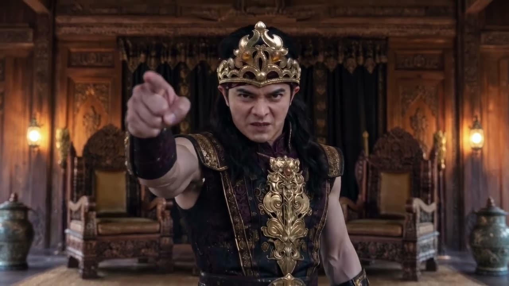

Jaka Tingkir Saga
Serial kolosal orisinal kami: kerajaan Jawa, perebutan takhta, dan pemuda desa yang berhadapan dengan Arya Penangsang.

Cerita
Legenda yang dikenal hampir semua orang Indonesia, dibuat ulang sebagai serial kolosal: istana, pasukan berkuda, api, dan pertarungan di tepi sungai.
Jaka Tingkir Saga adalah serial milik kami sendiri. Tidak ada klien yang menunggu persetujuan, jadi setiap keputusan cerita, wajah, dan suasana kami pegang dari awal sampai potongan terakhir.
Pendekatan
Kolosal biasanya berarti kerumunan figuran, kuda, set istana, dan jadwal syuting yang panjang. Kami membangun semuanya di kamar gelap.
Setiap tokoh dirancang dulu lewat lembar karakter, supaya wajah, mahkota, dan kain batiknya tetap sama dari adegan ke adegan. Sutradara memilih take, editor kami memotong, mewarnai, dan menata suaranya. AI mengerjakan gambar dan geraknya.
Lihat kreditTutup kredit
- Sutradara
- Nama menyusul
- Penulis naskah
- Nama menyusul
- Desain karakter
- Nama menyusul
- Editor dan warna
- Nama menyusul
- Dibuat dengan
- Arahan manusia, gambar dan gerak oleh AI, potong, warna, dan suara oleh tim kami




Proses
Dari lembar karakter ke layar
Arya Penangsang dirancang dulu di lembar karakter: depan, belakang, dan wajah. Geser garis merah untuk melihat tokoh yang sama di trailer.
